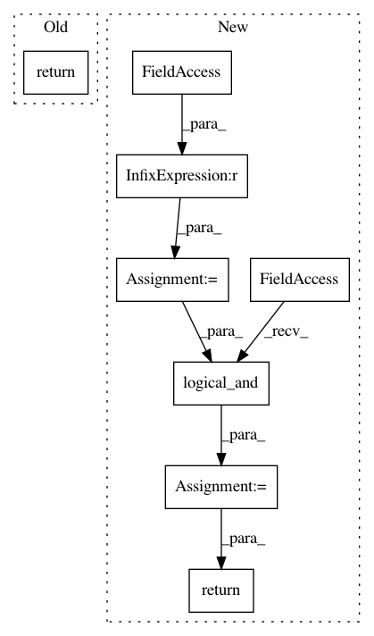

9685df29213e5943d2774f80e21564f4204823ec,secuml/core/data/annotations.py,Annotations,get_annotated_ids,#Annotations#Any#Any#,155
Before Change
elif label == BENIGN:
annotated_ids = [i for i in annotated_ids if not self.get_label(i)]
if family is not None:
return [i for i in annotated_ids if self.get_family(i) == family]
else:
return annotated_ids
def get_unlabeled_ids(self):
After Change
else:
mask = self.labels == label_str_to_bool(label)
if family is not None:
family_mask = self.families == family
mask = np.logical_and(mask, family_mask)
return self.ids.ids[mask]
def get_unlabeled_ids(self):
return self.ids.ids[self.labels == None] // NOQA: 711
In pattern: SUPERPATTERN
Frequency: 4
Non-data size: 8
Instances
Project Name: ANSSI-FR/SecuML
Commit Name: 9685df29213e5943d2774f80e21564f4204823ec
Time: 2019-09-03
Author: anael.beaugnon@ssi.gouv.fr
File Name: secuml/core/data/annotations.py
Class Name: Annotations
Method Name: get_annotated_ids
Project Name: ANSSI-FR/SecuML
Commit Name: 9685df29213e5943d2774f80e21564f4204823ec
Time: 2019-09-03
Author: anael.beaugnon@ssi.gouv.fr
File Name: secuml/core/data/ids.py
Class Name: Ids
Method Name: get_ids_between
Project Name: geomstats/geomstats
Commit Name: 4dfd6b1f92b4c1477fb887038ddfd5951bff8a4f
Time: 2020-09-21
Author: nicolas.guigui@inria.fr
File Name: geomstats/geometry/poincare_half_space.py
Class Name: PoincareHalfSpace
Method Name: belongs
Project Name: geomstats/geomstats
Commit Name: 7730c0644d851d61e0ee1c382afcd78a4716319a
Time: 2020-09-21
Author: nicolas.guigui@inria.fr
File Name: geomstats/geometry/poincare_half_space.py
Class Name: PoincareHalfSpace
Method Name: belongs